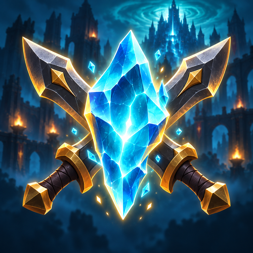
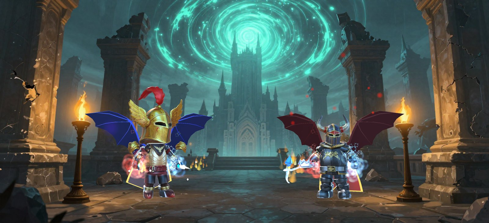

Mixi Online
An MMO-inspired action RPG for one-thumb play: hunt monster camps across an island of meadows, forests and badlands, loot Normal, Epic and Unique gear, enhance it to +10, play 1v1 duels and party with friends. No forced ads, only optional rewarded videos.
Tek parmakla oynanan, MMO esintili aksiyon RPG: çayır, orman ve çorak bölgelerdeki kampları avla, Normal, Epic ve Unique eşyalar topla, +10'a kadar bas, 1v1 düello yap ve arkadaşlarınla parti kur. Zorunlu reklam yok, yalnız isteğe bağlı ödüllü videolar.
Platforms: iOS · Android